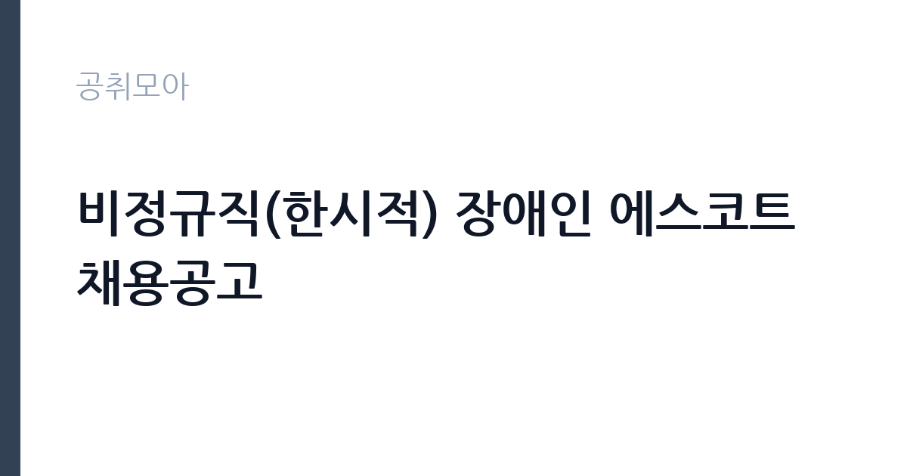

[공공기관] 비정규직(한시적) 장애인 에스코트 채용공고
대한적십자사 · 경기 · 마감 2026-11-16 (D-17) · 출처 잡알리오

한눈에 보는 모집 조건
| 기관 | 대한적십자사 |
|---|---|
| 공고명 | 비정규직(한시적) 장애인 에스코트 채용공고 |
| 고용형태 | 기간제 |
| 근무지 | 경기 |
| 게시일 | 2026-10-30 |
| 마감일 | 2026-11-16 (D-17) |
지원자격, 이렇게 읽으세요
- 공공기관 채용공시
- 세부 조건은 원문 공고문 확인
기간제 근로자는 근로계약 기간이 정해진 신분입니다. 계약 기간과 갱신 가능 여부가 근로계약서에 명시되며 기간 만료 시 근로관계가 종료됩니다. 결원 보충이나 특정 사업 기간에 맞춰 채용되는 경우가 많아 업무 범위가 명확합니다. 이번 공고는 대한적십자사가 직접 진행하는 자체 전형입니다. 이 공고는 장애인고용촉진 및 직업재활법 제2조 제1호에 따른 장애인이 지원 대상입니다. 만 18세 이상 고등학교 졸업자 또는 임용일 기준 졸업 예정자여야 하고, 남자는 군필 또는 면제자여야 합니다. 대한적십자사 직원운영규정 제20조의 결격사유에 해당하지 않아야 합니다. 학력과 경력 외에 별도 자격증을 요구하지 않는 대신, 이동 지원에 필요한 체력과 응대 태도를 봅니다. 근무 시간대와 이동 구간은 배치에 따라 달라집니다. 응시 자격 판단이 애매하면 접수 전에 채용 담당 부서로 문의하는 편이 안전합니다. 학력이나 전공 요건이 없는 공고라도 제출서류 목록은 그대로 적용되므로 서류 준비 부담은 줄지 않습니다. 공고문의 응시자격 표를 보면 자격 항목이 여러 줄로 나뉘어 있으므로, 각 줄을 하나씩 체크하며 본인 해당 여부를 표시해 두면 누락을 줄일 수 있습니다.
이 공고의 포인트
이 건은 대한적십자사가 같은 시기에 낸 2개 모집분야 가운데 장애인 근로 지원(에스코트) 직무입니다. 다른 직무 공고와 요건이 다르므로 지원 전에 모집분야 표를 대조해야 합니다. 이 공고의 첫 번째 포인트는 고용 형태입니다. 계약 기간이 정해져 있어 근무 종료 시점이 명확합니다. 그만큼 짧은 기간에 어떤 실적을 남길지가 중요해집니다. 두 번째는 업무 범위가 명확하다는 점입니다. 장애인 근로 지원(에스코트) 직무로 채용되므로 배치 이후 담당 업무가 크게 흔들리지 않습니다. 세 번째는 근무지입니다. 경기 지역 근무로 접근성은 좋지만 그만큼 지원자가 몰리는 지역이므로 경쟁률을 넉넉히 잡아야 합니다. 재공고로 올라온 공고라 이전 차수 지원자와의 형평성 기준을 확인할 필요가 있습니다. 선발 인원은 공고문에 명시되어 있으니 모집분야 항목을 함께 확인하십시오.
전형은 어떻게 진행되나
채용 절차는 공고문에 안내된 순서대로 진행되며, 서류 접수 마감 후에는 추가 접수나 서류 보완이 이뤄지지 않는 것이 원칙입니다. 서류심사에서는 응시자격과 제출서류의 형식 요건을 기계적으로 확인하므로, 경력 증명서의 기간과 직무 내용이 공고의 요건과 정확히 맞아야 합니다. 면접은 지원자 수에 따라 집단면접과 개별면접으로 나뉘고, 직무 관련 질문과 상황 대응 질문이 함께 나옵니다. 합격자 발표는 개별 통보 또는 홈페이지 게시로 이뤄지며 이후 임용 절차가 진행됩니다. 면접조 편성과 대기 시간이 공지되므로 당일 도착 시간을 여유 있게 잡으십시오.
원문에서 확인한 전형 방식
가.「장애인고용촉진 및 직업재활법」제2조 제1호 규정에 의한 장애인 나. 만 18세 이상 고등학교 졸업자 또는 임용일 기준 졸업 예정자 다. 남자의 경우 군필 또는 면제자 라. 대한적시밪사직원운영규정 제20조(결격사유)에 해당되지 않는자
이런 분께 추천해요
- 장애인 이동 지원이나 돌봄 경험이 있는 분
- 이동이 많은 업무를 무리 없이 수행할 수 있는 분
- 배치된 시간대에 맞춰 꾸준히 근무할 수 있는 분
지원 전 체크리스트
- 응시자격 요건과 경력 기준을 충족하는가 — 경력은 증명서로 입증해야 합니다
- 계약 기간과 근무 시작일·종료일을 확인했는가
- 제출서류 목록을 모두 준비했는가 — 누락 시 서류 단계에서 탈락합니다
- 접수 마감 2026-11-16 이전에 접수 방식을 확인해 제출했는가
모집 일정과 제출 타이밍
접수 마감은 2026-11-16이고 공고는 2026-10-30에 게시되었습니다. 준비 기간 17일 안에 서류 작성, 증빙 발급, 접수를 모두 마쳐야 하므로 주말을 포함해 일정을 미리 나누는 것이 좋습니다. 특히 경력 기술서나 직무수행계획서를 요구하는 공고는 작성에 시간이 걸리므로 첫날 초안을 잡으십시오. 서류 합격자 발표와 면접 사이 간격이 짧은 경우가 많아 면접 예상 질문은 서류 제출 전에 정리해 두는 편이 유리합니다. 마감 직전에는 접속이 몰리므로 여유를 두고 제출하십시오. 제출 서류는 공고문에 적힌 순서대로 정리하면 담당자가 확인하기 쉬워 누락이 줄어듭니다.
직무 이해하기: 공공기관
대한적십자사는 인도주의 사업과 혈액 사업, 재난 구호를 수행하는 법정 특수법인입니다. 혈액원은 헌혈과 혈액 제조·공급을 맡고 운전과 시설 관리 인력을 별도로 운영합니다. 에스코트 업무는 장애인 근로자가 출퇴근하거나 업무상 이동할 때 동행해 이동을 돕는 일입니다. 대중교통 이용이나 건물 출입, 계단·경사로 이동에서 휠체어나 보조기구를 함께 다루게 됩니다. 이동 경로와 시간을 미리 확인하고, 이용 기관과 일정을 맞춰 대기 시간을 줄이는 것이 업무의 핵심입니다. 근로자가 갑자기 일정을 바꾸면 동선을 다시 짜야 하므로 현장 판단이 필요합니다. 장애 유형과 정도에 따라 필요한 도움이 다르므로 사전에 인수인계를 받습니다. 이 직무는 담당 구역이 정해져 있어 근무지에 따라 실제 업무 환경이 달라집니다. 업무 매뉴얼과 지침이 문서로 정리되어 있어 절차를 익히면 반복 업무는 빠르게 손에 붙습니다.
자기소개서 작성 팁
지원서는 이동 지원과 응대 경험을 구체적으로 쓰는 것이 효과적입니다. 봉사활동이나 돌봄, 운전·안내 경험을 기간과 대상과 함께 정리하십시오. 장애인과 함께 이동하며 겪은 상황에서 본인이 판단한 내용을 사례로 쓰면 설득력이 생깁니다. 근무 시간을 지키고 결근 없이 근무할 수 있다는 점을 분명히 밝히십시오. 문항별 글자 수 제한을 먼저 확인하고, 각 문항의 첫 문장에 결론을 배치하는 방식이 읽기 쉽습니다. 지원 동기는 기관의 어떤 사업에 기여하겠다는 한 문장으로 시작하고, 이어서 본인의 경험을 근거로 붙이십시오. 감점을 피하려면 다른 기관에 보낼 수 있는 범용 문장을 그대로 쓰지 않는 것이 중요합니다. 기관 이름과 사업명이 문장 안에 자연스럽게 들어가야 준비도가 드러납니다.
면접 준비 포인트
면접에서는 이동 지원 상황에서의 판단과 응대를 확인합니다. 이용자가 갑자기 다른 경로를 요구할 때 어떻게 대응할지, 이동 중 위험한 구간을 만나면 어떤 순서로 조치할지 묻습니다. 장애인 이동 지원 경험이 있다면 구체적인 사례로 답하십시오. 이용자의 자율성을 존중하면서 필요한 도움만 제공한다는 태도를 보이면 신뢰를 얻습니다. 지원 기관의 최근 사업이나 조직 개편 내용을 확인해 두면 지원 동기 질문에서 차이가 납니다.
급여·근무조건 읽는 법
알리오(공공기관 경영정보 공개시스템) 2025년 결산 경영공시 기준으로 대한적십자사 일반정규직 1인당 평균보수액은 6,937만원, 공시된 신입사원 초임은 3,869만원입니다. 무기계약직 1인당 평균보수액은 4,017만원으로 공시되어 정규직과 차이가 납니다. 평균보수액은 기본급에 고정수당·실적수당·성과상여금·급여성 복리후생비를 모두 합산한 값이라 월 기본급만 보고 판단하면 실제와 크게 어긋납니다. 이번 공고는 기간제 채용이라 위 정규직 평균보수는 그대로 적용되지 않습니다. 기간제 보수는 기관의 기간제 임금 기준을 따르며 계약 기간이 함께 정해집니다. 장애인 제한경쟁으로 채용되는 근로자의 보수는 병원의 계약직 또는 무기계약직 임금 기준을 따릅니다. 계약 기간과 근무 시간, 수당 항목이 공고문에 제시되므로 월 보수와 총 근무 기간을 함께 확인해야 합니다. 채용 형태에 따라 정년까지 근무가 가능한지가 달라지므로 이 점을 먼저 확인하십시오. 2026년 적용 최저임금은 시급 10,320원, 월 환산 2,156,880원(주 40시간·209시간 기준)입니다. 고용노동부 고시 제2025-47호로 확정된 금액입니다. 공고문에 금액이 제시되지 않은 항목은 원문 보수표나 처우 설명에서 확인해야 하며 확인되지 않은 수치는 쓰지 않는 것이 원칙입니다. 비교할 때는 월 급여뿐 아니라 상여·명절휴가비·복지포인트·초과근무수당까지 포함한 연간 총액으로 계산하십시오. 기간제라면 계약 기간 동안의 총액을, 무기계약이라면 호봉 상승과 정년까지의 누적 소득을 기준으로 판단하는 편이 정확합니다.
자주 묻는 질문
- 선발 인원은 몇 명인가요?
공고문의 모집분야 항목에 직종별 인원이 표로 제시되어 있습니다. 첨부된 공고문 원문에서 확인하십시오. - 근무지는 어디인가요?
경기 지역의 대한적십자사 소속 근무지입니다. 세부 주소와 출퇴근 조건은 원문 공고문에서 확인할 수 있습니다. - 보수는 얼마인가요?
채용 신분(기간제)과 기관 임금 규정에 따라 정해지며 구체적인 금액은 공고문 처우 항목에 제시됩니다. 금액이 공개되지 않은 경우에는 원문의 보수표를 확인하십시오.
함께 보면 좋은 공고
[공공기관] 2026년 하반기 제2차 한국문화예술위원회 휴직대체인력(일반행정) 및 계약직(일반행정) 채용 — 마감 2026-11-13[공공기관] 기장군도시관리공단 2026년도 체험형 청년인턴 채용 재공고 — 마감 2026-11-10[공공기관] [광주보훈병원] 계약직 업무지원직(고객지원_검사코디) - 휴직대체 직원 채용 공고 — 마감 2026-11-09출처: 잡알리오 공개정보를 바탕으로 공취모아가 정리한 안내글입니다. 모집 조건·일정은 변경될 수 있으니 지원 전 반드시 원문 공고문을 확인하세요. 본 글은 정보 제공용이며 합격을 보장하지 않습니다.